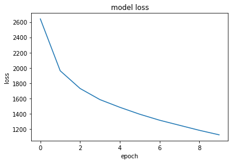
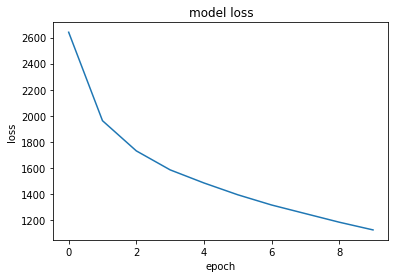

Machine Translation#
By Neuromatch Academy
Content creators: Juan Manuel Rodriguez, Salomey Osei
Production editors: Amita Kapoor, Spiros Chavlis
Objective#
The main goal of this project is to train a sequence to sequence NN that transtlate a language into another language, e.g. french to english. This notebook is based on this Pytorch tutorial, but change several thing.
Setup#
# Imports
import io
import re
import math
import random
import unicodedata
import numpy as np
import matplotlib.pyplot as plt
import torch
import torch.nn as nn
import torch.nn.functional as F
from torch import optim
from tqdm.notebook import tqdm
from sklearn.utils import shuffle
device = torch.device("cuda" if torch.cuda.is_available() else "cpu")
# Download the data
import requests, zipfile
zip_file_url = 'https://download.pytorch.org/tutorial/data.zip'
r = requests.get(zip_file_url)
z = zipfile.ZipFile(io.BytesIO(r.content))
z.extractall()
N = 10 # print the 10 first lines
with open('data/eng-fra.txt') as f:
for i in range(N):
line = next(f).strip()
print(line)
Go. Va !
Run! Cours !
Run! Courez !
Wow! Ça alors !
Fire! Au feu !
Help! À l'aide !
Jump. Saute.
Stop! Ça suffit !
Stop! Stop !
Stop! Arrête-toi !
Representing the data#
We create a language representation defining indixes for each word. In addition to the words, our languages have three special tokens:
SOS: Start Of Sentence
EOS: End Of Sentence
PAD: Padding token used to fill inputs vectors where there are no other words.
SOS_token = 0
EOS_token = 1
class Lang:
def __init__(self, name):
self.name = name
self.word2index = {}
self.word2count = {}
self.index2word = {0: "SOS", 1: "EOS", 2: "PAD"}
self.n_words = 3 # Count SOS and EOS and PAD
def addSentence(self, sentence):
for word in sentence.split(' '):
self.addWord(word)
def addWord(self, word):
if word not in self.word2index:
self.word2index[word] = self.n_words
self.word2count[word] = 1
self.index2word[self.n_words] = word
self.n_words += 1
else:
self.word2count[word] += 1
def unicodeToAscii(s):
return ''.join(
c for c in unicodedata.normalize('NFD', s)
if unicodedata.category(c) != 'Mn'
)
def normalizeString(s):
s = unicodeToAscii(s.lower().strip())
s = re.sub(r"([.!?])", r" \1", s)
s = re.sub(r"[^a-zA-Z.!?]+", r" ", s)
return s
def readLangs(lang1, lang2, reverse=False):
print("Reading lines...")
# Read the file and split into lines
lines = io.open('data/%s-%s.txt' % (lang1, lang2), encoding='utf-8').\
read().strip().split('\n')
# Split every line into pairs and normalize
pairs = [[normalizeString(s) for s in l.split('\t')] for l in lines]
# Reverse pairs, make Lang instances
if reverse:
pairs = [list(reversed(p)) for p in pairs]
input_lang = Lang(lang2)
output_lang = Lang(lang1)
else:
input_lang = Lang(lang1)
output_lang = Lang(lang2)
return input_lang, output_lang, pairs
MAX_LENGTH = 10
eng_prefixes = (
"i am ", "i m ",
"he is", "he s ",
"she is", "she s ",
"you are", "you re ",
"we are", "we re ",
"they are", "they re "
)
def filterPair(p):
return len(p[0].split(' ')) < MAX_LENGTH and \
len(p[1].split(' ')) < MAX_LENGTH and \
p[1].startswith(eng_prefixes)
def filterPairs(pairs):
return [pair for pair in pairs if filterPair(pair)]
def prepareData(lang1, lang2, reverse=False):
input_lang, output_lang, pairs = readLangs(lang1, lang2, reverse)
print("Read %s sentence pairs" % len(pairs))
pairs = filterPairs(pairs)
print("Trimmed to %s sentence pairs" % len(pairs))
print("Counting words...")
for pair in pairs:
input_lang.addSentence(pair[0])
output_lang.addSentence(pair[1])
print("Counted words:")
print(input_lang.name, input_lang.n_words)
print(output_lang.name, output_lang.n_words)
return input_lang, output_lang, pairs
input_lang, output_lang, pairs = prepareData('eng', 'fra', True)
print(random.choice(pairs))
Reading lines...
Read 135842 sentence pairs
Trimmed to 10599 sentence pairs
Counting words...
Counted words:
fra 4346
eng 2804
['nous sommes sans emploi .', 'we re unemployed .']
Language word distributions#
We can check which is the word distribution in our dataset.
def plot_lang(lang, top_k=100):
words = list(lang.word2count.keys())
words.sort(key=lambda w: lang.word2count[w], reverse=True)
print(words[:top_k])
count_occurences = sum(lang.word2count.values())
accumulated = 0
counter = 0
while accumulated < count_occurences * 0.8:
accumulated += lang.word2count[words[counter]]
counter += 1
print(f"The {counter * 100 / len(words)}% most common words "
f"account for the {accumulated * 100 / count_occurences}% of the occurrences")
plt.bar(range(100), [lang.word2count[w] for w in words[:top_k]])
plt.show()
plot_lang(input_lang)
['.', 'je', 'suis', 'est', 'vous', 'pas', 'de', 'il', 'nous', 'tu', 'etes', 'ne', 'es', 'en', 'a', 'n', 'un', 'sommes', 'elle', 'la', 'tres', 'c', 'que', 'le', 'sont', 'j', 'une', 'd', 'ai', 'pour', 'l', 'ils', 'plus', 'ce', 'des', 'me', 'vais', 'elles', 'moi', '!', 'mon', 'trop', 'train', 'fort', 'si', 'ici', 'du', 'toujours', 'toi', 'tout', 'tous', 'les', '?', 'vraiment', 'sur', 't', 'te', 'm', 'dans', 'avec', 'avoir', 'encore', 'qu', 'tom', 'votre', 'au', 'peur', 'y', 'desole', 'bien', 'ca', 'bon', 'fais', 'toutes', 'heureux', 'faire', 'etre', 'son', 'aussi', 'assez', 'lui', 'tellement', 'ma', 'mes', 'fatigue', 'par', 'et', 'fait', 'ton', 'se', 'juste', 'maintenant', 'grand', 'desolee', 'avons', 'allons', 'peu', 'deux', 'on', 'vieux']
The 4.674188349067465% most common words account for the 80.0371543427945% of the occurrences
plot_lang(output_lang)
['.', 'i', 're', 'you', 'm', 'he', 'not', 'is', 'a', 'to', 'we', 's', 'the', 'very', 'are', 'of', 'she', 'am', 'they', 'in', 'going', 'my', 'for', 'all', 'at', 'here', 'with', 'that', 'good', 'as', 'your', 't', 'me', 'too', 'this', 'sorry', 'on', 'glad', 'it', 'than', 'now', 'happy', 'about', '?', 'aren', 'so', 'tired', 'afraid', 'sure', 'right', 'an', 'his', 'out', 'really', 'one', 'busy', 'still', 'just', 'old', 'always', 'tom', 'looking', 'be', 'friend', 'no', 'her', 'ready', 'by', '!', 'and', 'teacher', 'from', 'getting', 'him', 'alone', 'being', 'home', 'up', 'have', 'go', 'doing', 'help', 'see', 'proud', 'man', 'married', 'kind', 'who', 'waiting', 'yet', 'young', 'person', 'done', 'late', 'friends', 'new', 'anymore', 'hungry', 'such', 'sick']
The 4.85540878257765% most common words account for the 80.00500226665207% of the occurrences
The RNN#
Our goal is to create a network that takes an input sentence in one language and then provides the translation of the sentence in an output language. Our network will use an RNN which will consist of an encoder, and a decoder. The encoder will first transform our input sentence into a vector, and pass this condensed vector into the decoder which will then translate the text in our given language. The process of this is further explained in the diagram below:

Note: Please note that this same approach can be used for next sentence prediction task
class EncoderRNN(nn.Module):
def __init__(self, input_size, hidden_size):
super(EncoderRNN, self).__init__()
self.hidden_size = hidden_size
self.embedding = nn.Embedding(input_size, hidden_size)
self.gru = nn.GRU(hidden_size, hidden_size, batch_first=True)
def forward(self, input, hidden):
embedded = self.embedding(input)#.view(1, 1, -1)
output = embedded
output, hidden = self.gru(output, hidden)
return output, hidden
def initHidden(self, batch_size):
return torch.zeros(1, batch_size, self.hidden_size, device=device)
class DecoderRNN(nn.Module):
def __init__(self, hidden_size, output_size):
super(DecoderRNN, self).__init__()
self.hidden_size = hidden_size
self.embedding = nn.Embedding(output_size, hidden_size)
self.gru = nn.GRU(hidden_size, hidden_size, batch_first=True)
self.out = nn.Linear(hidden_size, output_size)
self.softmax = nn.LogSoftmax(dim=-1)
def forward(self, input, hidden):
output = self.embedding(input)
output = F.relu(output)
output, hidden = self.gru(output, hidden)
output = self.softmax(self.out(output))
return output, hidden
def initHidden(self):
return torch.zeros(1, 1, self.hidden_size, device=device)
Representing the text#
def to_train(input_lang, output_lang, pairs, max_len=MAX_LENGTH+2):
x_input = []
x_output = []
target = []
for i, o in pairs:
s_i = [2] * max_len + [0] + [input_lang.word2index[w] for w in i.split(" ")] + [1]
s_o = [0] + [output_lang.word2index[w] for w in o.split(" ")] + [1] + [2] * max_len
s_to = s_o[1:] + [2]
x_input.append(s_i[-max_len:])
x_output.append(s_o[:max_len])
target.append(s_to[:max_len])
return x_input, x_output, target
x_input, x_partial, y = to_train(input_lang, output_lang, pairs)
print('Representation of an input sentece:')
print(x_input[0])
print(' '.join([input_lang.index2word[w] for w in x_input[0]]))
print('\nRepresentation of an partial sentece:')
print(x_partial[0])
print(' '.join([output_lang.index2word[w] for w in x_partial[0]]))
print('\nRepresentation of an target sentece:')
print(y[0])
print(' '.join([output_lang.index2word[w] for w in y[0]]))
Representation of an input sentece:
[2, 2, 2, 2, 2, 2, 0, 3, 4, 5, 6, 1]
PAD PAD PAD PAD PAD PAD SOS j ai ans . EOS
Representation of an partial sentece:
[0, 3, 4, 5, 1, 2, 2, 2, 2, 2, 2, 2]
SOS i m . EOS PAD PAD PAD PAD PAD PAD PAD
Representation of an target sentece:
[3, 4, 5, 1, 2, 2, 2, 2, 2, 2, 2, 2]
i m . EOS PAD PAD PAD PAD PAD PAD PAD PAD
We represent the input sentence using left padding because the GRU network process the sentence left to rignt, and we want that the output is as close to our sentence as possible. In contrast, we use right padding to the partial translation sentence because we want that our context is process inmediatly by our decoder. Finally, our target is our partial translation left-shifted.
Training#
Using this representation, we can train our model. Notice that our feed the full sentences as partial translations instanted of feeding partial sentences. This speed-ups our training, as next words in the sentence do not affects the output of the network and the gradients up to that point.
def predict(encoder, decoder, input, output):
_, hidden = encoder(input, encoder.initHidden(input.shape[0]))
out, _ = decoder(output, hidden)
return out
def train(encoder, decoder, loss, input, output, target, learning_rate=0.001, epochs=10, batch_size=100):
plot_losses = []
plot_full_losses = []
encoder_optimizer = optim.SGD(encoder.parameters(), lr=learning_rate)
decoder_optimizer = optim.SGD(decoder.parameters(), lr=learning_rate)
for _ in tqdm(range(epochs)):
c_input, c_output, c_target = shuffle(input, output, target)
c_input = torch.tensor(c_input, dtype=torch.long, device=device)
c_output = torch.tensor(c_output, dtype=torch.long, device=device)
c_target = torch.tensor(c_target, dtype=torch.long, device=device)
acc_loss = 0
for i in range(0, c_target.shape[0], batch_size):
c_batch_size = c_target[i:i+batch_size, ...].shape[0]
encoder_optimizer.zero_grad()
decoder_optimizer.zero_grad()
out = predict(encoder, decoder, c_input[i:i+batch_size, ...], c_output[i:i+batch_size, ...])
#Reshapes the output and target to use the expected loss format.
# N x Classes for the output
# N for the targets
# Where N is the batch size
out = out.reshape(c_batch_size * c_input.shape[1], -1)
r_target = c_target[i:i+batch_size, ...].reshape(c_batch_size * c_input.shape[1])
c_loss = loss(out, r_target)
# Mask the errors for padding as they are not usefull!
valid = torch.where(r_target == 2, 0, 1)
c_loss = c_loss * valid
c_loss = torch.sum(c_loss) #/ torch.sum(valid)
c_loss.backward()
encoder_optimizer.step()
decoder_optimizer.step()
plot_full_losses.append(c_loss.detach().numpy())
acc_loss += c_loss.detach().numpy()
plot_losses.append(acc_loss /math.ceil(c_target.shape[0] / batch_size))
return plot_losses, plot_full_losses
hidden_size = 300
num_epochs = 10 # Change this to 50 (original value!)
encoder = EncoderRNN(input_lang.n_words, hidden_size).to(device)
decoder = DecoderRNN(hidden_size, output_lang.n_words)
epoch_error, batch_error = train(encoder, decoder,
nn.NLLLoss(reduction='none'),
x_input, x_partial, y,
epochs=num_epochs)
#print(epoch_error)
#print(batch_error)
plt.plot(batch_error)
plt.title('model loss')
plt.ylabel('loss')
plt.xlabel('minibatch')
plt.show()
plt.plot(epoch_error)
plt.title('model loss')
plt.ylabel('loss')
plt.xlabel('epoch')
plt.show()
 

Prediction and generation#
In the following cells, we can can see how our Seq2Seq model produces a prediction.
p = predict(encoder, decoder, torch.tensor([x_input[40]],
dtype=torch.long,
device=device),
torch.tensor([x_partial[40]], dtype=torch.long, device=device))
p = p.detach().numpy()
print(np.argmax(p, axis=-1))
print(x_partial[40])
[[ 3 4 103 5 1 5 5 5 5 5 5 5]]
[0, 3, 4, 32, 5, 1, 2, 2, 2, 2, 2, 2]
Generating a translation#
The generation is a very simple iterative process:
Initialize the partiar translation using only the start of sentence token ‘ SOS’ (its id, which is 0).
Repeat:
Predict the probability distribution for the next token given the partial translation.
Pick the most probable token. (other option is to sample the distribution).
Add that token to the translation.
If the token is EOF, break the loop.
Return the partial translation, which is now a full translation.
If we want to generate several candidates, we can use other generation algorithm. Beam Search is a great option for this.
def gen_translation(encoder, decoder, text, input_lang, output_lang,
max_len=MAX_LENGTH+2):
text = [2] * max_len + [0] + [input_lang.word2index[w] for w in text.split(" ")] + [1]
text = torch.tensor([text[-max_len:]], dtype=torch.long, device=device)
out = [0] + [2] * max_len
out = [out[:max_len]]
for i in range(1, max_len):
pt_out =torch.tensor(out, dtype=torch.long, device=device)
p = predict(encoder, decoder, text, pt_out).detach().numpy()
out[0][i] = np.argmax(p, axis=-1)[0, i-1]
if np.argmax(p, axis=-1)[0, i-1] == 1:
break
return ' '.join([output_lang.index2word[idx] for idx in out[0]])
gen_translation(encoder, decoder, pairs[40][0], input_lang, output_lang)
'SOS i m in trouble . EOS PAD PAD PAD PAD PAD'
for i in range(40):
print('> {}'.format(pairs[i][0]))
print('= {}'.format(pairs[i][1]))
print('< {}'.format(gen_translation(encoder, decoder,
pairs[i][0],
input_lang,
output_lang)))
print('*' * 40)
> j ai ans .
= i m .
< SOS i m really . EOS PAD PAD PAD PAD PAD PAD
****************************************
> je vais bien .
= i m ok .
< SOS i m going to go . EOS PAD PAD PAD PAD
****************************************
> ca va .
= i m ok .
< SOS i m going to go . EOS PAD PAD PAD PAD
****************************************
> je suis gras .
= i m fat .
< SOS i m exhausted . EOS PAD PAD PAD PAD PAD PAD
****************************************
> je suis gros .
= i m fat .
< SOS i m exhausted . EOS PAD PAD PAD PAD PAD PAD
****************************************
> je suis en forme .
= i m fit .
< SOS i m in trouble . EOS PAD PAD PAD PAD PAD
****************************************
> je suis touche !
= i m hit !
< SOS i m so ! EOS PAD PAD PAD PAD PAD PAD
****************************************
> je suis touchee !
= i m hit !
< SOS i m so ! EOS PAD PAD PAD PAD PAD PAD
****************************************
> je suis malade .
= i m ill .
< SOS i m a teacher . EOS PAD PAD PAD PAD PAD
****************************************
> je suis triste .
= i m sad .
< SOS i m your friend . EOS PAD PAD PAD PAD PAD
****************************************
> je suis timide .
= i m shy .
< SOS i m exhausted . EOS PAD PAD PAD PAD PAD PAD
****************************************
> je suis mouille .
= i m wet .
< SOS i m being . EOS PAD PAD PAD PAD PAD PAD
****************************************
> je suis mouillee .
= i m wet .
< SOS i m your friend . EOS PAD PAD PAD PAD PAD
****************************************
> il est mouille .
= he s wet .
< SOS he is a teacher . EOS PAD PAD PAD PAD PAD
****************************************
> je suis gras .
= i am fat .
< SOS i m exhausted . EOS PAD PAD PAD PAD PAD PAD
****************************************
> je suis revenu .
= i m back .
< SOS i m being . EOS PAD PAD PAD PAD PAD PAD
****************************************
> me revoila .
= i m back .
< SOS i m being serious . EOS PAD PAD PAD PAD PAD
****************************************
> je suis chauve .
= i m bald .
< SOS i m still married . EOS PAD PAD PAD PAD PAD
****************************************
> je suis occupe .
= i m busy .
< SOS i m busy . EOS PAD PAD PAD PAD PAD PAD
****************************************
> je suis occupee .
= i m busy .
< SOS i m busy . EOS PAD PAD PAD PAD PAD PAD
****************************************
> je suis calme .
= i m calm .
< SOS i m exhausted . EOS PAD PAD PAD PAD PAD PAD
****************************************
> j ai froid .
= i m cold .
< SOS i m in trouble . EOS PAD PAD PAD PAD PAD
****************************************
> j en ai fini .
= i m done .
< SOS i m done . EOS PAD PAD PAD PAD PAD PAD
****************************************
> tout va bien .
= i m fine .
< SOS i m all done . EOS PAD PAD PAD PAD PAD
****************************************
> je vais bien .
= i m fine .
< SOS i m going to go . EOS PAD PAD PAD PAD
****************************************
> ca va .
= i m fine .
< SOS i m going to go . EOS PAD PAD PAD PAD
****************************************
> je suis libre !
= i m free !
< SOS i m so ! EOS PAD PAD PAD PAD PAD PAD
****************************************
> je suis libre .
= i m free .
< SOS i m in trouble . EOS PAD PAD PAD PAD PAD
****************************************
> je suis disponible .
= i m free .
< SOS i m a teacher . EOS PAD PAD PAD PAD PAD
****************************************
> je suis repu !
= i m full .
< SOS i m so ! EOS PAD PAD PAD PAD PAD PAD
****************************************
> je suis rassasie !
= i m full .
< SOS i m so ! EOS PAD PAD PAD PAD PAD PAD
****************************************
> je suis content .
= i m glad .
< SOS i m happy . EOS PAD PAD PAD PAD PAD PAD
****************************************
> je suis chez moi .
= i m home .
< SOS i m just tired . EOS PAD PAD PAD PAD PAD
****************************************
> je suis en retard .
= i m late .
< SOS i m in trouble . EOS PAD PAD PAD PAD PAD
****************************************
> je suis paresseux .
= i m lazy .
< SOS i m in . EOS PAD PAD PAD PAD PAD PAD
****************************************
> je suis faineant .
= i m lazy .
< SOS i m in . EOS PAD PAD PAD PAD PAD PAD
****************************************
> je suis paresseuse .
= i m lazy .
< SOS i m a teacher . EOS PAD PAD PAD PAD PAD
****************************************
> je suis faineante .
= i m lazy .
< SOS i m exhausted . EOS PAD PAD PAD PAD PAD PAD
****************************************
> je vais bien .
= i m okay .
< SOS i m going to go . EOS PAD PAD PAD PAD
****************************************
> je me porte bien .
= i m okay .
< SOS i m all hungry . EOS PAD PAD PAD PAD PAD
****************************************
for i in range(40):
print('> {}'.format(pairs[-i][0]))
print('= {}'.format(pairs[-i][1]))
print('< {}'.format(gen_translation(encoder, decoder,
pairs[-i][0],
input_lang,
output_lang)))
print('*' * 40)
> j ai ans .
= i m .
< SOS i m really . EOS PAD PAD PAD PAD PAD PAD
****************************************
> il est un des candidats aux presidentielles americaines .
= he is one of the american presidential candidates .
< SOS he is a good at the mood . EOS PAD PAD
****************************************
> ils collectent des dons pour l eglise .
= they are collecting contributions for the church .
< SOS they are in the same age . EOS PAD PAD PAD
****************************************
> j ai quelques difficultes a compiler ce programme .
= i m having some problems compiling this software .
< SOS i m going to go out of this . EOS PAD
****************************************
> il entreprend des experiences dans son laboratoire .
= he is carrying out experiments in his laboratory .
< SOS he is afraid of his success . EOS PAD PAD PAD
****************************************
> elle est non seulement belle mais aussi intelligente .
= she is not only beautiful but also intelligent .
< SOS she is not as smart as me . EOS PAD PAD
****************************************
> nous enquetons sur le meurtre de tom jackson .
= we re investigating the murder of tom jackson .
< SOS we re going to be late . EOS PAD PAD PAD
****************************************
> elle est tres receptive a la suggestion hypnotique .
= she s very susceptible to hypnotic suggestion .
< SOS she is very good at the job . EOS PAD PAD
****************************************
> elle trouve toujours a redire aux autres .
= she is always finding fault with other people .
< SOS she is always complaining for her car . EOS PAD PAD
****************************************
> je pense apprendre le coreen le semestre prochain .
= i m thinking of learning korean next semester .
< SOS i m the one who trained me . EOS PAD PAD
****************************************
> tu es probablement trop jeune pour le comprendre .
= you re probably too young to understand this .
< SOS you re too old for this . EOS PAD PAD PAD
****************************************
> vous etes probablement trop jeune pour le comprendre .
= you re probably too young to understand this .
< SOS you re too old for this . EOS PAD PAD PAD
****************************************
> tu es trop critique des defauts des autres .
= you are too critical of others shortcomings .
< SOS you are too young to me . EOS PAD PAD PAD
****************************************
> vous etes trop critique des defauts des autres .
= you are too critical of others shortcomings .
< SOS you are too young to me . EOS PAD PAD PAD
****************************************
> nous attendons la publication de son ouvrage .
= we are expecting the publication of his book .
< SOS we are going to the same age . EOS PAD PAD
****************************************
> elle est forte pour inventer des histoires interessantes .
= she is good at making up interesting stories .
< SOS she is always complaining for her . EOS PAD PAD PAD
****************************************
> elle trouve toujours des defauts a son mari .
= she is always finding fault with her husband .
< SOS she is always complaining of her car . EOS PAD PAD
****************************************
> je lui dis constamment de bien se comporter .
= i m constantly telling her to behave herself .
< SOS i m going to be your help . EOS PAD PAD
****************************************
> c est un interprete dans une banque internationale .
= he s an interpreter in an international bank .
< SOS he is a man of a teacher . EOS PAD PAD
****************************************
> il est expert en litterature francaise .
= he is well acquainted with french literature .
< SOS he is in his own . EOS PAD PAD PAD PAD
****************************************
> il bataille encore avec les croyances religieuses .
= he is still grappling with religious beliefs .
< SOS he is always complaining with me . EOS PAD PAD PAD
****************************************
> il est competent en espagnol et en italien .
= he is proficient in both spanish and italian .
< SOS he is in love with his own . EOS PAD PAD
****************************************
> il quitte narita pour hawaii ce soir .
= he is leaving narita for hawaii this evening .
< SOS he is always complaining to go to go . EOS PAD
****************************************
> il s amuse en jouant aux jeux videos .
= he is amusing himself by playing video games .
< SOS he is always complaining of his success . EOS PAD PAD
****************************************
> il trouve toujours a redire aux autres .
= he is always finding fault with other people .
< SOS he is always complaining to go . EOS PAD PAD PAD
****************************************
> nous discuterons du probleme demain .
= we re going to discuss the problem tomorrow .
< SOS we re going to be late . EOS PAD PAD PAD
****************************************
> nous avons des problemes avec notre nouveau voisin .
= we are having trouble with our new neighbor .
< SOS we are going to be in trouble . EOS PAD PAD
****************************************
> il me tarde de recevoir votre reponse .
= i m looking forward to receiving your reply .
< SOS i m sure of you are . EOS PAD PAD PAD
****************************************
> j ai hate de recevoir ta reponse .
= i m looking forward to receiving your reply .
< SOS i m sorry if i frightened you . EOS PAD PAD
****************************************
> je pense cloturer mon compte d epargne .
= i am thinking of closing my savings account .
< SOS i m sure of my father . EOS PAD PAD PAD
****************************************
> je suis etonne par ton attitude irresponsable .
= i am alarmed by your irresponsible attitude .
< SOS i m your friend of your friend . EOS PAD PAD
****************************************
> je suis inquiet de votre attitude irresponsable .
= i am alarmed by your irresponsible attitude .
< SOS i m your friend of your friend . EOS PAD PAD
****************************************
> il est une autorite reconnue sur le sujet .
= he is a recognized authority on the subject .
< SOS he is a good at the mood . EOS PAD PAD
****************************************
> nous avons des invites ce soir .
= we re having some guests over this evening .
< SOS we re going to be in this . EOS PAD PAD
****************************************
> nous nous rejouissons de vous revoir .
= we are looking forward to seeing you again .
< SOS we re going to be your help . EOS PAD PAD
****************************************
> elles sont disposees a discuter du probleme .
= they are willing to talk about the problem .
< SOS they are all the same age . EOS PAD PAD PAD
****************************************
> ils sont disposes a discuter du probleme .
= they are willing to talk about the problem .
< SOS they are about to the same . EOS PAD PAD PAD
****************************************
> ils parlent de ce qu ils vont chanter .
= they are talking about what they will sing .
< SOS they are going to be in the same age . EOS
****************************************
> je suis le porte parole de cette institution .
= i m the spokesperson for this organization .
< SOS i m the one who trained me . EOS PAD PAD
****************************************
> je suis le porte parole de cette organisation .
= i m the spokesperson for this organization .
< SOS i m the one who trained me . EOS PAD PAD
****************************************
To dos#
We use the full dataset to train/test. This is not a great idea, you should split the dataset into training/test.
We did some empirical evaluation looking at the translated senteces. Other evaluation can be done using metrics like BLUE score.
We try it with languages that are writting in a left-rigth as input and output. What happens if the languages are not written in this way? Datasets Even more
It would be possible to do machine translation using other NN architectures, such as attention based model.
We are not handling proper nouns, and that could be a problem.
This can be applied to next sentence prediction.